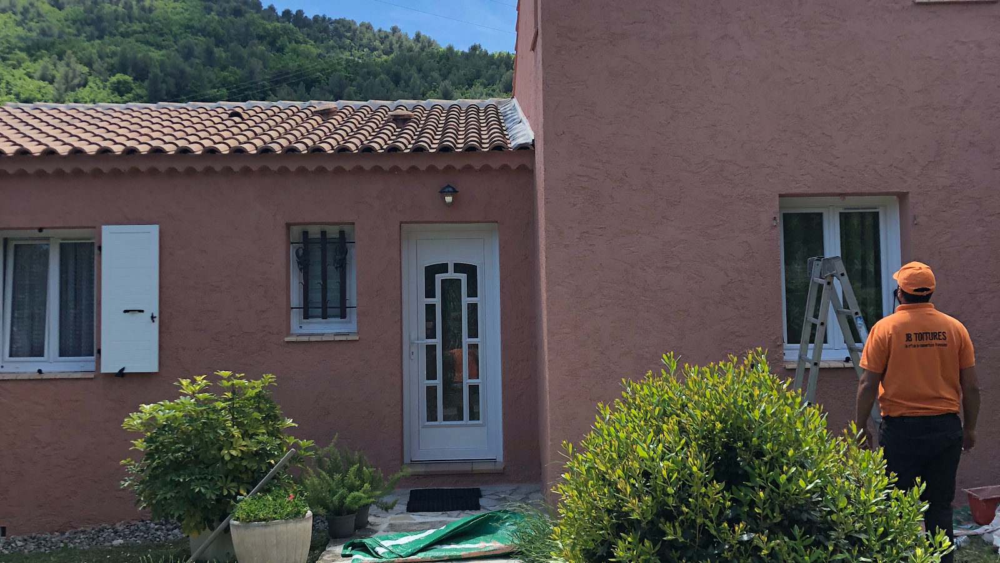
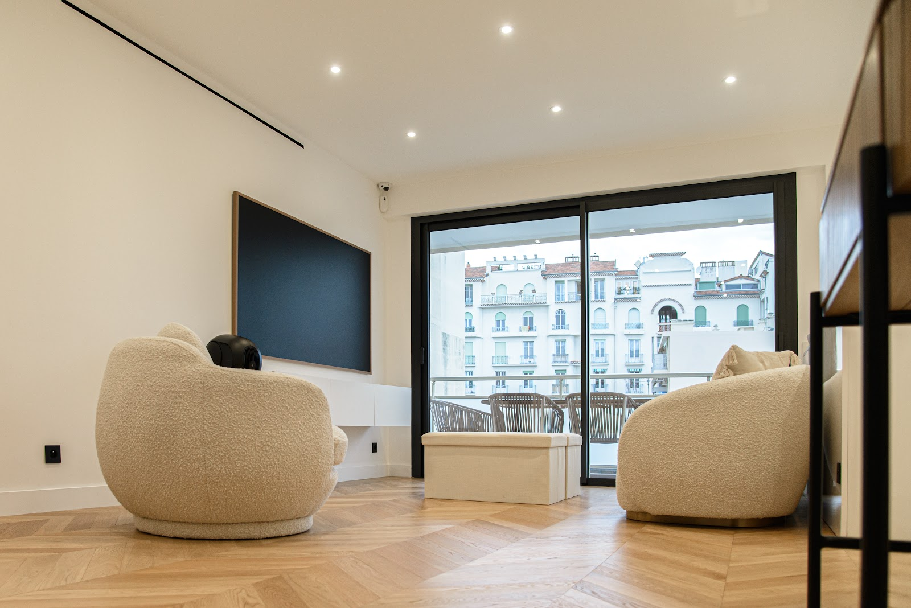
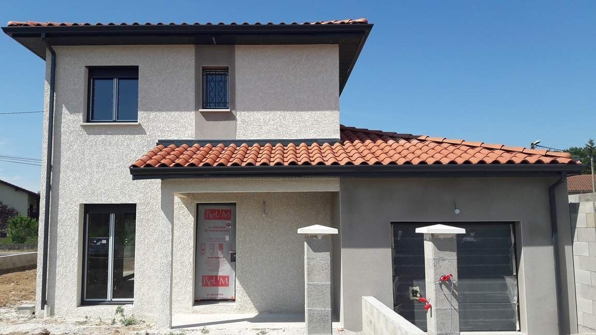
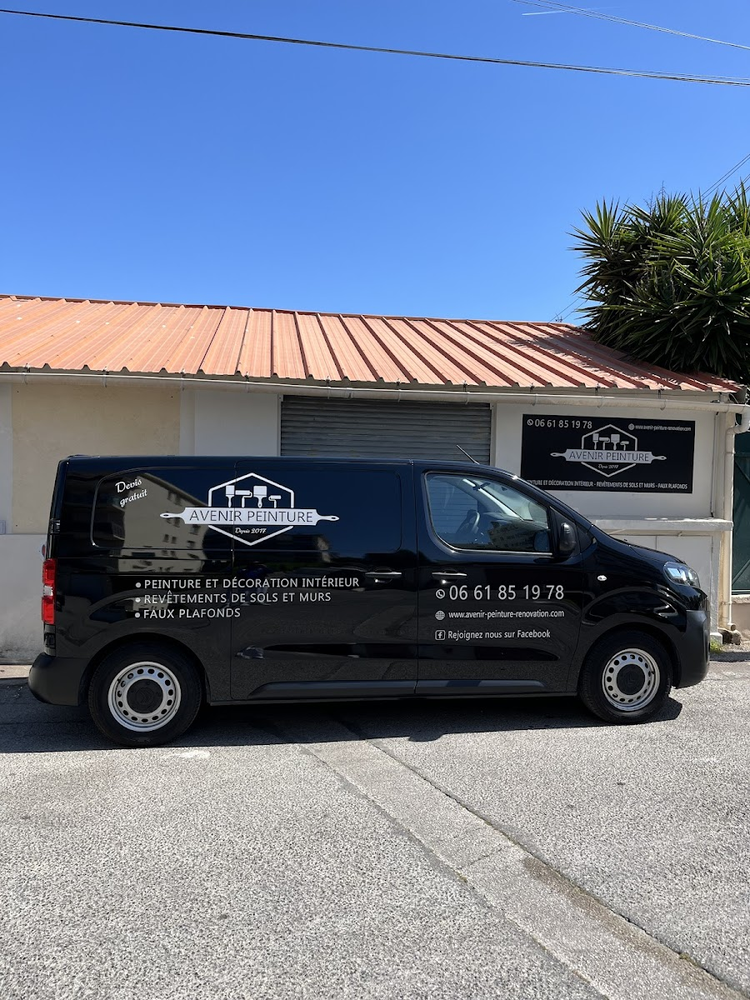
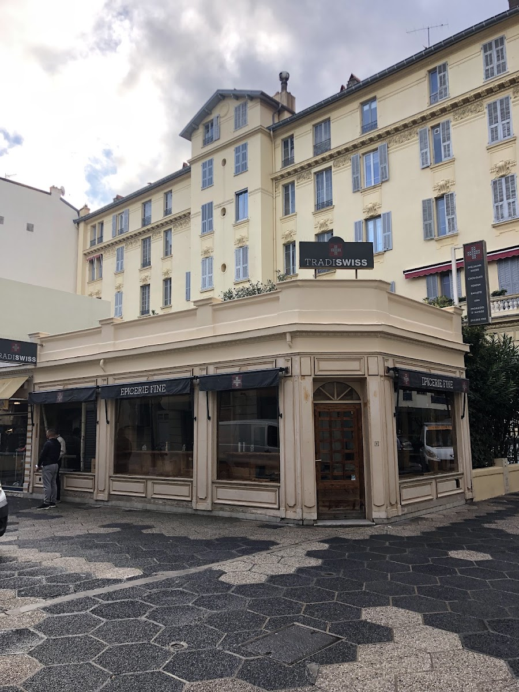
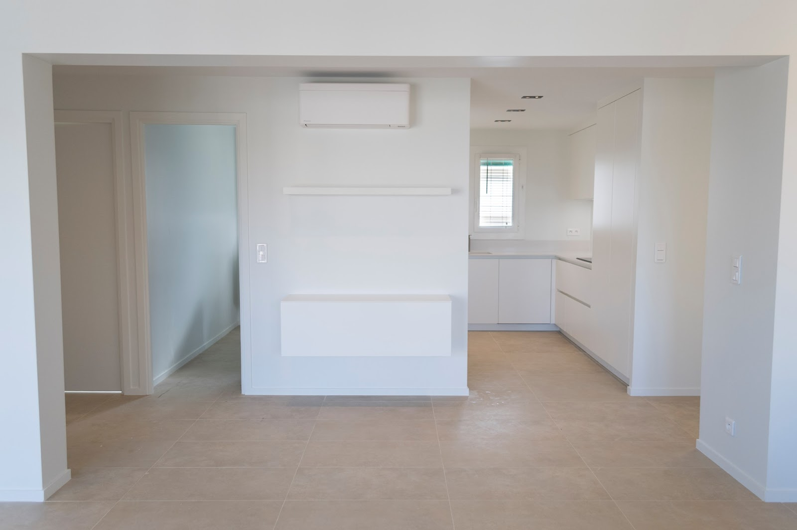
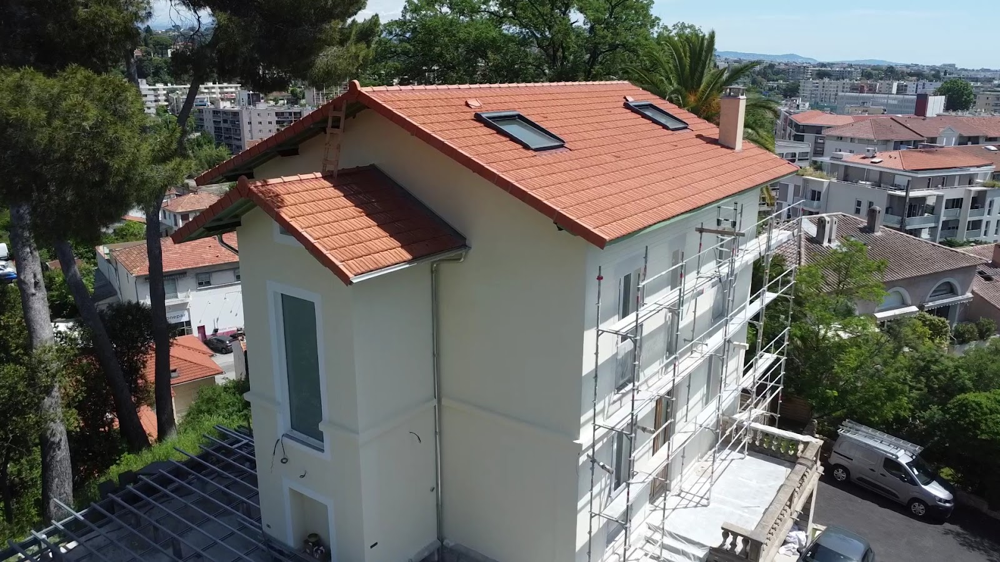

🎨
Ravalement de façades
Nettoyage, réparation des fissures, enduits et mise en peinture. Une façade saine, protégée des intempéries et embellie pour des années.
Peinture en bâtiment & ravalement. Survolez chaque réalisation : le savoir-faire se répète, chantier après chantier.
Survolez les images · faites défiler ↓
De la villa azuréenne à l'immeuble en centre-ville, nous redonnons éclat et protection à vos murs — avec des finitions à la hauteur des plus belles adresses de la Côte.
Nettoyage, réparation des fissures, enduits et mise en peinture. Une façade saine, protégée des intempéries et embellie pour des années.
Intérieur comme extérieur : préparation rigoureuse des supports, application maîtrisée, rendu net et durable, sans coulures ni reprises.
Murs, plafonds, boiseries et détails. Chaque chantier traité comme une pièce unique, jusqu'à la finition impeccable.
Hydrofuge, anti-mousse, imperméabilisants : on protège durablement vos murs contre l'humidité et le climat méditerranéen.
Photos réelles de nos chantiers — façades, villas, intérieurs et rénovations sur la Côte d'Azur. Faites défiler pour explorer.







« Je recommande vivement cette entreprise : excellent travail et service impeccable. »
« Artisan de confiance, je ferai encore appel à eux. »
« Service fiable et rapide. »
Un devis gratuit, sans engagement, et des conseils d'artisan adaptés à votre bien. On se déplace sur tout Antibes et les Alpes-Maritimes.
Appelez directement, on répond vite.
📞 04 22 10 42 37